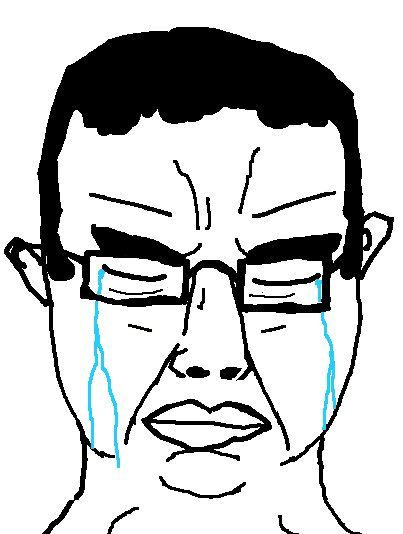

about me
this page is about me, my projects and larp. and i use linux btw!!!
- 1. im ultra larp
- 2. i use linux
- 3. i'm cool
- 4. i like tech
you can check my projects and my posts too because im tuff boi
i love linux

also im ltn
im ugly but im cool
i hate windows(os)
i have a homelab and thinkpad!!!!!!!!!
yeah but it's over :(
once i installed opsec with sudo apt install opsec(my opsec lvl is infinite now so i can larp like a king of larping)
once i typed rm -rf feelings and it really fucking worked, now i dont have feelings(just kidding)(just skidding)(just larping)